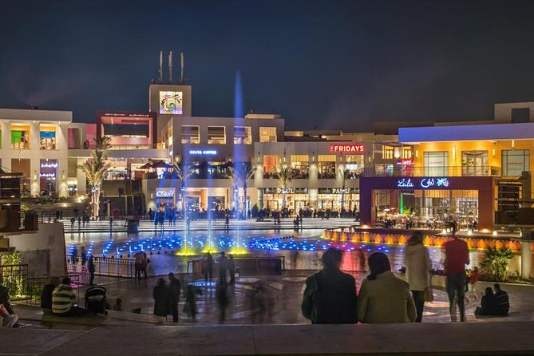
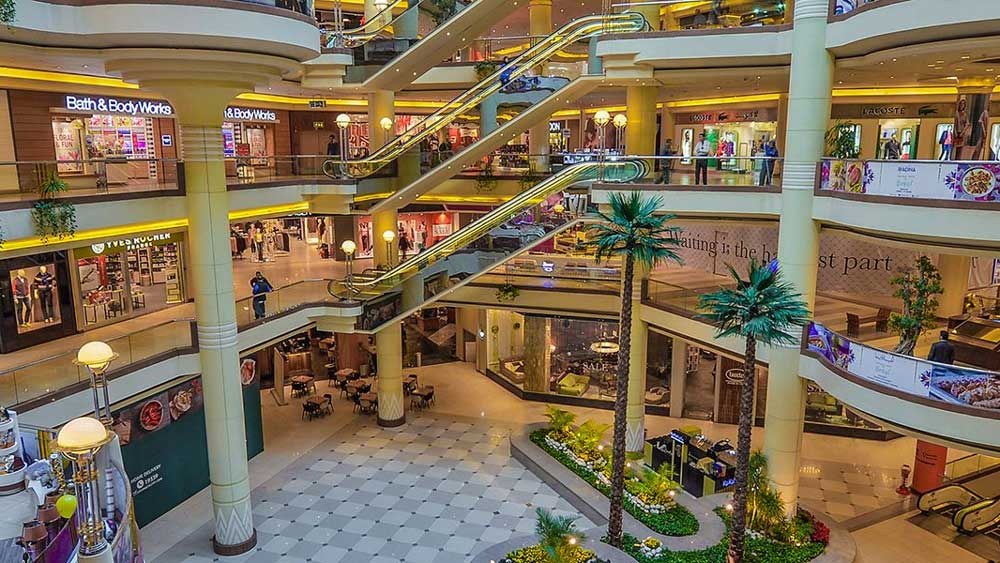
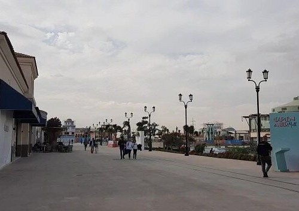
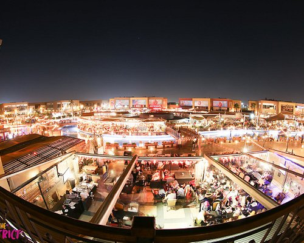
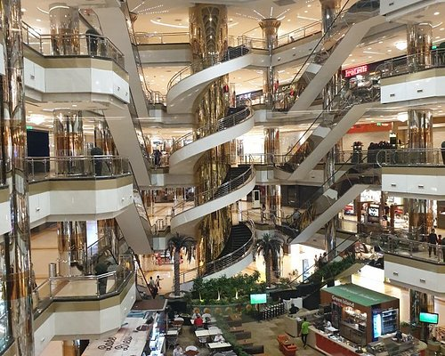
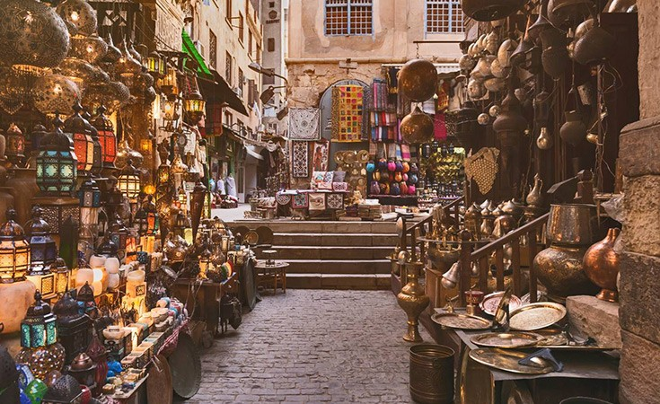
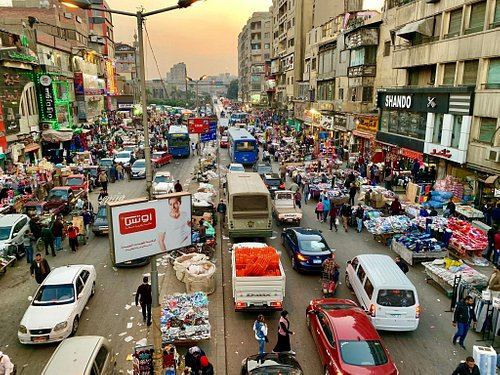
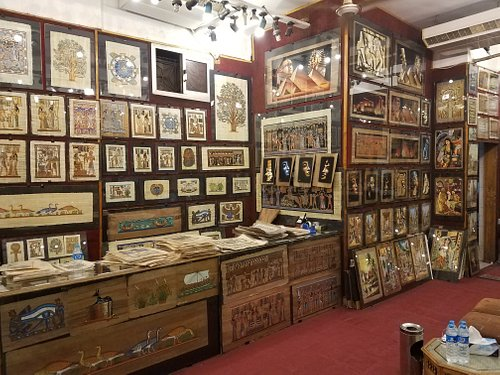

It is the largest of its kind in the Middle East, with a large rental
area of 150,000 thousand square metres. It is the first in Africa
and the Arab world, and after it is the Al-Quds Center in Algeria. It
consists of 7 levels and has a cinema complex with 21 screens. There
was also a Spinneys hypermarket, but 99 has been licensed for three
years or more. The ground floor of the second phase is a small
supermarket. I was also provided with: 7 entrances and exits for
parking on 3 main streets for the struggle of workers’ cars (the
capital’

Cairo Festival City Business Park is distinguished by its very
distinctive strategic location. The project was implemented in the
heart of the Fifth Settlement, directly on South Teseen Street, one of
the most famous and vital areas in the settlement at all. The project
is located only 5 minutes from Cairo Airport. It is located directly
on the ring road. It is only 10 minutes from Auc.

Mall of Arabia is a large mall and commercial center located in the
Arab Republic of Egypt in the 6th of October City in Juhayna Square.
It is the largest mall in the city and was inaugurated on December 24,
2010. It is owned by the Egyptian Centers for Real Estate Development,
which is equally owned by three brothers from the Al Hokair family in
the Kingdom of Saudi Arabia. This mall includes a number of shops,
telecommunications companies, cinemas and AMAC

The Open Air Mall, Madinaty, is one of the largest observers of
advanced shopping that quickly tracks the modern lifestyle in Egypt,
as it combines open areas in the air and 8 buildings overlooking the
vast green areas and artificial lakes, and extends with a rental area
of 92 thousand square meters. The Open Air Mall was partially
operated for the first time in 2019 with the opening of two of its
buildings, the second building E which includes the Carrefour
hypermarket, and the second building D which includes the Renaissance
Cinema complex with 15 advanced cinema screens with the latest special
display technologies.

A very nice place to take your wife because the place is suitable for
healthy and fast food and cold and hot drinks. The place is also
romantic and its service is excellent. It provides outdoor chairs,
clean bathrooms, cafes and restaurants at the same time. There are car
garages for the disabled and other things. It is also suitable for
taking children and shopping for all personal and non-personal items.

The Stella Heights Mall, North Coast, is one of the commercial
projects in which you can start commercial investment in the most
prestigious and vital locations on the North Coast, as the Stella
Heights project is one of the best coastal projects, the most
important of which is the North Coast. Therefore, you can obtain,
through Sirak Real Estate Development Company, the commercial units in
alura north coast, which are characterized by various areas and
competitive prices, and most importantly, they are located in the best
vital location with a lot of residents whom you can serve through
these commercial projects that you will implement in Commercial units
of varying sizes

Khan El Khalili, one of the neighborhoods of Old Cairo, enjoys a great
tourist attraction for visitors to Cairo and Egypt in general. It is
characterized by the presence of popular bazaars, shops and
restaurants. It is also characterized by the large number of tourists
and the familiarity of its residents with them. The Khan al-Khalili
neighborhood was a source of inspiration for many Egyptian writers and
writers, most notably the writer Naguib Mahfouz, who wrote one of his
novels that takes place in the neighborhood and bears his name “Khan
al-Khalili”, which was turned into a movie starring the actor Imad
Hamdi.

Work began in the Ataba Market in 1886 AD, and it was opened in 1891
AD, and it was known as the Vegetable Market. Jean-Luc Arnault
confirms in his book “Cairo: Building a Modern City” issued by the
Supreme Council of Culture, “While the Ataba Market was being built in
1890 AD, the administration responsible for establishing the market
developed a project To build an 80-meter-long street extending between
the northern facade of the market...

Amazing shop! They have the best selection of authentic papyrus, many
different styles, reasonable prices and the staff can talk you through
everything in English! Also packed my purchases very well so they did
not get damaged in my suitcase travelling home. A real gem, will be
back!Queríamos comprar un papiro autentico para casa. Encontramos esta
tienda y fue todo perfecto. Tienen una colección muy amplia y buenos
precios (sobre todo si se compara con los precios de la Casa del
Papiro, que es donde te llevan en las visitas guiadas. Aquí cuestan
menos de un tercio). Nos atendieron muy bien sin ningún tipo de
agobio. Nosotros compramos una de la diosa Isis que llevábamos un par
de días buscando